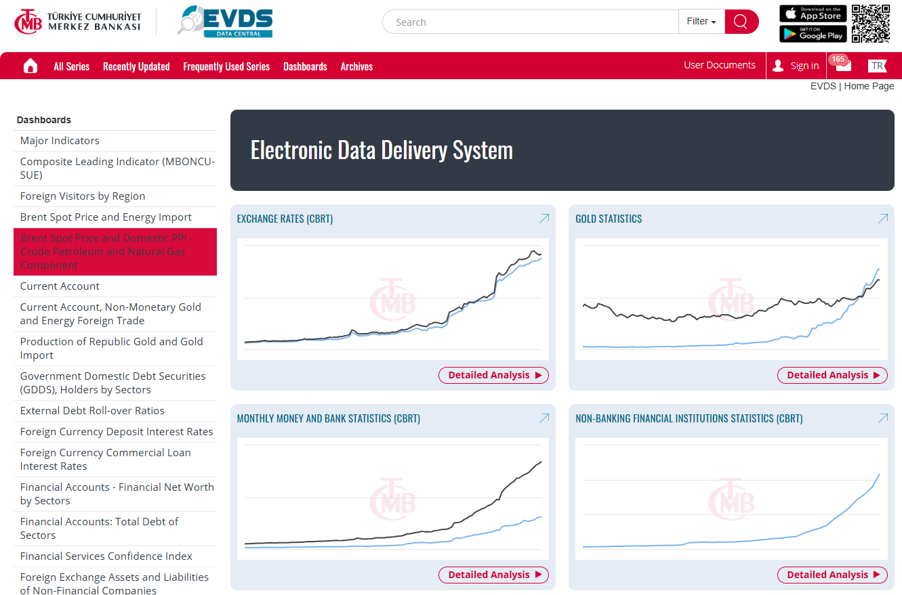

api_key <- readLines("path/to/your_api_key.txt")
The Central Bank of the Republic of Turkey (CBRT) provides a wealth of economic data crucial for researchers, analysts, and policymakers. Through the Electronic Data Delivery System (EVDS ), users can access time-series data on various economic indicators. With the CBRT R package this process becomes streamlined, empowering users to integrate CBRT data directly into their R workflows. This blog post delves into the details of accessing CBRT data using the package, explaining everything from obtaining an API key to practical examples of retrieving economic series.
Introduction
The CBRT serves as Turkey’s central bank, tasked with implementing monetary policies and maintaining financial stability. The EVDS (Elektronik Veri Dağıtım Sistemi) is the CBRT’s online data delivery platform, providing access to a vast repository of economic data, including price indices, exchange rates, monetary aggregates, and more. EVDS supports API-based data retrieval, allowing programmatic access to its datasets.
EVDS
The Electronic Data Delivery System (EVDS) is a dynamic and interactive system that presents statistical time series data produced by the CBRT and/or data produced by other institutions and compiled by the CBRT. These data are published on dynamic web pages. They can also be reported in the xls format or through the web service client (json, csv, xml), viewed in the graphics format, and received via e-mail by subscribing to the system. The EVDS was first introduced in 1995 and is available in Turkish and English.
The system provides a rich range of economic data and information to support economic education and foster economic research. Its technical infrastructure was revised in October 2017. The EVDS serves the public with its new facilities and content such as the REST web service, Customization, Reports, Interactive Charts, Frequently Used Data Groups, Recently Updated Data Groups, and data displayed on Turkey and world maps.
Setting Up Access: The API Key
To access EVDS data programmatically, you need an API key, which serves as a unique identifier for authenticating your requests.
Requesting an API Key:
Visit EVDS and create an account. Once logged in, navigate to the API access section to generate your personal API key.Storing Your API Key Securely:
Avoid hardcoding your API key in scripts. Instead, save it in a.txtfile and read it into your R session. For example:
CBRT Package
The CBRT R package, developed by Prof. Dr. Erol Taymaz from Middle East Technical University, is a powerful tool designed to simplify data retrieval from the Central Bank of the Republic of Turkey’s (CBRT) Electronic Data Delivery System (EVDS). This package enables users to efficiently access and analyze economic indicators by providing functions for querying data series, retrieving metadata, and searching for relevant datasets through the EVDS API. he CBRT package includes functions for finding, and downloading data from the Central Bank of the Republic of Türkiye’s database. The CBRT database covers more than 40,000 time series variables. For detailed documentation and further insights into the package, you can visit this link.
The package is now available at CRAN (November 13, 2024), and can be installed by
install.packages("CBRT")Core Functions
All data series (variables) are classified into data groups, and data groups into data categories. There are 44 data categories (including the archieved ones), 499 data groups, and 40,826 data series.
getAllCategoriesInfo
The getAllCategoriesInfo function in the CBRT R package provides a convenient way to access information about the main data categories available in the Central Bank of the Republic of Türkiye’s (CBRT) Electronic Data Delivery System (EVDS). This function requires a valid API key as an argument to authenticate your request. By retrieving a structured list of these categories, users can explore the high-level organization of economic data offered by the EVDS API.
library(CBRT)
my_api_key <- readLines("D:/evds_api_key.txt",warn=FALSE)
Categories <- getAllCategoriesInfo(CBRTKey = my_api_key)
head(Categories) cid topic
1: 1 MARKET DATA (CBRT)
2: 2 EXCHANGE RATES (CBRT)
3: 3 INTEREST RATE STATISTICS (CBRT)
4: 4 MONTHLY MONEY AND BANK STATISTICS (CBRT)
5: 5 SECURITIES STATISTICS (CBRT)
6: 12 FINANCIAL SERVICES SURVEY (CBRT)getAllGroupsInfo
The CBRT R package offers the getAllGroupsInfo function, which allows users to access detailed information about the groups within specific categories in the Central Bank of the Republic of Turkey’s (CBRT) Electronic Data Delivery System (EVDS). Similar to getAllCategoriesInfo, this function requires a valid API key for authentication. The groups represent subcategories or finer classifications of data within the broader main categories. By leveraging the cid (category ID) variable from the categories table, users can establish a relationship between categories and their corresponding groups. This functionality provides a structured approach to exploring the hierarchy of economic data in EVDS, enabling users to efficiently navigate and identify the datasets most relevant to their research or analysis.
Groups <- getAllGroupsInfo(CBRTKey = my_api_key)
head(Groups) cid groupCode
1: 1 bie_pyrepo
2: 0 bie_mkbral
3: 25 bie_mkaltytl
4: 1 bie_ppibsm
5: 1 bie_pyintbnk
6: 1 bie_tldov
groupName
1: Open Market Repo and Reverse Repo Transactions
2: Istanbul Gold Exchange (TRY_USD) (Archive)
3: Gold Prices (Averaged) - Free Market (TRY)
4: Free Deposits of Banks and Total Liquidity (Beginning of the Day)(Million TRY)(CBRT)
5: Interbank Money Market Transactions Summary (TRY Thousand or %)
6: Total Volume of FX Transaction of Banks Against Turkish Lira (Million USD, CBRT)
freq source sourceLink revisionPolicy appLink firstDate lastDate
1: 5 CBRT 01-08-2020 01-05-1989
2: 2 BORSA ISTANBUL 29-06-2018 27-07-1995
3: 5 Market 01-02-2025 01-12-1950
4: 2 CBRT 07-03-2025 04-01-2007
5: 2 CBRT 06-03-2025 04-11-1996
6: 2 CBRT 27-02-2025 14-10-2002Additionally, the groups table contains valuable metadata, including the date ranges for available data, data frequency, and data sources. The frequency of the data is indicated by predefined frequency codes:
Daily
Workday
Weekly
Biweekly
Monthly
Quarterly
Semiannual
Annual
getAllSeriesInfo
The getAllSeriesInfo function in the CBRT R package enables users to retrieve up-to-date metadata for data series available in the Central Bank of the Republic of Turkey’s (CBRT) Electronic Data Delivery System (EVDS). This function, like others in the package, requires a valid API key for authentication. The metadata includes essential details such as group codes, series names, and other relevant information about the datasets within a chosen topic. These details help users identify and filter specific series of interest. Furthermore, by utilizing key variables, the series metadata can be linked to the categories and groups tables, allowing users to establish relationships across the data hierarchy. This capability ensures a structured and interconnected exploration of economic datasets, simplifying the process of locating and analyzing relevant data for research or analysis.
Series <- getAllSeriesInfo(CBRTKey = my_api_key)head(Series) cid topic
1: 7 DEPOSITS AND PARTICIPATION FUNDS SUBJECT TO REQUIRED RESERVES (CBRT)
2: 7 DEPOSITS AND PARTICIPATION FUNDS SUBJECT TO REQUIRED RESERVES (CBRT)
3: 7 DEPOSITS AND PARTICIPATION FUNDS SUBJECT TO REQUIRED RESERVES (CBRT)
4: 7 DEPOSITS AND PARTICIPATION FUNDS SUBJECT TO REQUIRED RESERVES (CBRT)
5: 7 DEPOSITS AND PARTICIPATION FUNDS SUBJECT TO REQUIRED RESERVES (CBRT)
6: 7 DEPOSITS AND PARTICIPATION FUNDS SUBJECT TO REQUIRED RESERVES (CBRT)
groupCode
1: bie_KYBKATFON
2: bie_KYBKATFON
3: bie_KYBKATFON
4: bie_KYBKATFON
5: bie_KYBKATFON
6: bie_KYBKATFON
groupName freq
1: Breakdown of Participation Funds Subject to Reserve Requirements 3
2: Breakdown of Participation Funds Subject to Reserve Requirements 3
3: Breakdown of Participation Funds Subject to Reserve Requirements 3
4: Breakdown of Participation Funds Subject to Reserve Requirements 3
5: Breakdown of Participation Funds Subject to Reserve Requirements 3
6: Breakdown of Participation Funds Subject to Reserve Requirements 3
seriesCode seriesName start end
1: TP.KYBKATFON.KB1 Turkish Lira_Turkish Lira Accounts 10-05-2002 13-12-2024
2: TP.KYBKATFON.KB2 Fx Accounts (USD) 10-05-2002 13-12-2024
3: TP.KYBKATFON.KB3 Fx Accounts (EURO) 10-05-2002 13-12-2024
4: TP.KYBKATFON.KB4 Fx Accounts Precious Minerals (USD) 14-10-2011 13-12-2024
5: TP.KYBKATFON.KB5 Fx Accounts Other (USD) 10-05-2002 13-12-2024
6: TP.KYBKATFON.KB6 Total Fx Accounts (USD) 10-05-2002 13-12-2024
aggMethod freqname tag
1: last Week <NA>
2: last Week <NA>
3: last Week <NA>
4: last Week <NA>
5: last Week <NA>
6: last Week <NA>searchCBRT
The searchCBRT function in the CBRT R package provides a powerful tool for searching any category, group, or series name within the Central Bank of the Republic of Turkey’s (CBRT) Electronic Data Delivery System (EVDS). By specifying keywords and the desired field to search in, users can efficiently locate relevant datasets. This function simplifies the process of finding specific information within the extensive EVDS repository, enabling direct access to the desired table or dataset. Whether searching for broad topics, specific groups, or individual data series, searchCBRT offers a flexible and efficient way to navigate the system and pinpoint the data needed for analysis.
Suppose we want to find datasets related to “Consumer Prices” within the EVDS system. Using the searchCBRT function, we can search for this keyword in relevant fields to locate the desired tables or series. Here’s how to do it:
searchCBRT("consumer price", field = "series") seriesCode
1: TP.ENFBEK.TEA12
2: TP.ENFBEK.TEA345
3: TP.FE.OKTG01
4: TP.FG.A09
5: TP.FG.A10
6: TP.TG2.Y14
7: TP.TG2.Y15
8: TP.FG.F19
9: TP.FG.F20
seriesName
1: Percentage of households expecting consumer prices to increase more rapidly or at the same rate (%)
2: Percentage of households expecting consumer prices to stay about the same, fall or increase at a slower rate (%)
3: Consumer Price Index
4: Consumer Prices Index of Ankara (Archive)
5: Consumer Prices Index of Istanbul (Archive)
6: Assessment on Consumer prices change rate (over the last 12 months)
7: Expectation for consumer prices change rate (over the next 12 months compared to the past 12 months)
8: Ankara Consumer Price Index (Archive)
9: Istanbul Consumer Price Index (Archive)
groupCode
1: bie_enfbek
2: bie_enfbek
3: bie_feoktg
4: bie_fgtukfiy2
5: bie_fgtukfiy2
6: bie_mbgven2
7: bie_mbgven2
8: bie_tukfiy1
9: bie_tukfiy1
groupName
1: Sectoral Inflation Expectations
2: Sectoral Inflation Expectations
3: TURKSTAT- Consumer Price Index-Indicators for the CPI's Having Specified Coverages (2003=100)(New Series)
4: Consumer Price Index (1987=100) (TURKSTAT) (Archive)
5: Consumer Price Index (1987=100) (TURKSTAT) (Archive)
6: Seasonally unadjusted Consumer Confidence Index and Indices of Consumer Tendency Survey Questions (*)
7: Seasonally unadjusted Consumer Confidence Index and Indices of Consumer Tendency Survey Questions (*)
8: Consumer Price Index (1978_1979=100) (TURKSTAT) (Archive)
9: Consumer Price Index (1978_1979=100) (TURKSTAT) (Archive)getDataSeries
The getDataSeries function in the CBRT R package is a versatile tool for importing one or more time series directly from the EVDS. This function provides users with several advanced features to customize their data retrieval. For example, users can specify the frequency level (freq), such as daily, weekly, or monthly, and set a date range using the startDate and endDate arguments in the format DD-MM-YYYY. If the endDate is not specified, the function automatically retrieves data up to the latest available point.
An additional feature of getDataSeries is its ability to aggregate higher-frequency data into lower-frequency formats using the aggType argument. Supported aggregation methods include:
avg: Average value,first: First observation,last: Last observation,max: Maximum value,min: Minimum value,sum: Summation of values.
For instance, if weekly data is aggregated to a monthly frequency, the aggregation method is applied to compute the resulting values. Furthermore, the na.rm argument allows users to drop all missing dates, ensuring clean and continuous time series data.
Here’s an example demonstrating its use:
# Import a time series (e.g., CPI data) with specific parameters
cpi_data <- getDataSeries(
series = c("TP.FE.OKTG01"), # Example series ID
CBRTKey = my_api_key, # Your API key
freq = 5, # Monthly frequency
startDate = "01-01-2010", # Start date
endDate = "31-12-2023", # End date
na.rm = TRUE # Remove missing dates
)
# View the imported data
head(cpi_data) time TP.FE.OKTG01
1: 2010-01-15 174.07
2: 2010-02-15 176.59
3: 2010-03-15 177.62
4: 2010-04-15 178.68
5: 2010-05-15 178.04
6: 2010-06-15 177.04For example, we want to fetch exchange rates for USD, EUR, and GBP against the Turkish Lira (TRY) for a specific time period in monthly frequency.
# Define the series IDs for USD, EUR, and GBP (Sales rate against TRY)
usd_series <- "TP.DK.USD.S"
eur_series <- "TP.DK.EUR.S"
gbp_series <- "TP.DK.GBP.S"
# Define the frequency method
freq <- 5 # Monthly frequency
# Define the date range for the data (e.g., from 01-01-2020 to 31-12-2024)
startDate <- "01-01-2020"
endDate <- "31-12-2024"
# Fetch the data for USD, EUR, and GBP exchange rates
exchange_data <- getDataSeries(
series = c(usd_series,eur_series,gbp_series),
CBRTKey = my_api_key,
freq = freq,
startDate = startDate,
endDate = endDate,
na.rm = TRUE
)
head(exchange_data) time TP.DK.USD.S TP.DK.EUR.S TP.DK.GBP.S
1: 2020-01-15 5.928827 6.586905 7.763218
2: 2020-02-15 6.055370 6.605785 7.872095
3: 2020-03-15 6.325805 7.001341 7.858764
4: 2020-04-15 6.831252 7.430133 8.493257
5: 2020-05-15 6.964488 7.573124 8.588112
6: 2020-06-15 6.821091 7.676245 8.560195Conclusion
The CBRT R package is a powerful tool for accessing and analyzing Turkish economic data. By combining the package’s functionality with R’s robust analytical tools, users can unlock insights and streamline their research. Whether you’re tracking inflation trends, analyzing monetary policy impacts, or studying exchange rates, the CBRT package offers a seamless experience.
References
Taymaz, E. (2024). CBRT R Package. Retrieved from CBRT PackageDocumentation
Central Bank of the Republic of Turkey. Electronic Data Delivery System (EVDS). Retrieved from EVDS